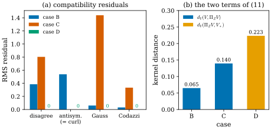
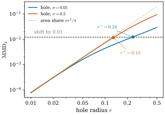

50.4 Realizability Is Not Identifiability
Goals
- support chart가 주는 first fundamental form과 covariance normal이 주는 second fundamental form 추정을 식으로 쓰고, 논문이 이름만 든 다섯 compatibility residual을 Bonnet 정리의 조건으로 읽을 수 있다.
- metric decomposition (11)로 “어떤 surface와 모순이 없다(realizable)”와 “진짜 surface로 정해진다(identifiable)”를 나누고, 모순은 없지만 틀린 surface의 예를 계산할 수 있다.
- kernel varifold distance와 bound (12)를 증명하고 그 역이 성립하지 않는 이유를 말하며, depth와 RGB가 주는 관측 조건(coercivity, restricted rendering Jacobian)을 작은 예로 계산할 수 있다.
Prerequisites
- first fundamental form과 second fundamental form의 행렬 \(\mathsf{g}\), \(\mathsf{h}\), Weingarten map \(\mathsf{W} = \mathsf{g}^{-1}\mathsf{h}\), Bonnet 정리(Section 39.5, Theorem 39.5.4)와 coefficient의 두 표현(Definition 8.5.1, Proposition 8.5.2).
- depth map에서 점과 tangent vector를 얻는 법과 grazing angle의 문제(Section 30.4).
- Section 50.2의 Gaussian varifold, Section 50.3의 transport, Chapter 46의 bounded Lipschitz distance(Definition 46.7.6).
Motivation
앞의 두 절은 Gaussian을 varifold로 읽는 법과, refinement가 그 varifold를 망치지 않게 하는 법을 보았다. 그러나 둘 다 “Gaussian들이 이미 surface 위에 있다면”의 이야기다. 학습된 Gaussian이 정말 surface를 이루는지는 어떻게 아는가? 논문의 답은 두 단계다. 먼저 Gaussian의 중심이 그리는 모양과 Gaussian의 normal이 그리는 모양이 서로 모순 없는지 검사한다. 이것이 compatibility 진단이다. 그런데 모순이 없다는 것만으로는 부족하다. smooth한 평면은 아무 모순이 없지만, 진짜 물체가 구라면 틀린 답이다. 모순 없음(realizability)과 진짜임(identifiability)은 다른 문제이고, 뒤의 것은 이미지가 depth와 visibility를 얼마나 정해 주는지에 달렸다. 논문이 RGB-only 결과에서 실패를 그대로 보고하는 이유가 이 구분이다. 이 절은 논문 §5와 부록 B, C를 따라 이 구분을 식으로 만든다.
Two Descriptions of One Surface
논문의 compatibility 진단은 같은 surface 조각의 두 local description을 비교한다. 하나는 Gaussian 중심들에 맞춘 support geometry이고, 다른 하나는 covariance normal과 그 도함수가 예측하는 extrinsic geometry다. Gaussian 중심들에 chart \(\mathbf{x}(u, v)\)를 맞추면(§7.1에 따르면 MLS로 맞춘다) 그 Jacobian \(D\mathbf{x} = (\mathbf{x}_u\ \mathbf{x}_v)\)가 first fundamental form
을 준다(논문의 \(I = J_\varphi^{\mathsf T}J_\varphi\)). 논문은 이어서 “support normal과 covariance normal field가 second fundamental form의 추정을 하나씩 준다”고만 쓴다. 공식은 없다. Proposition 8.5.2의 두 표현을 쓰면 자연스러운 정의는 다음과 같다(우리의 정식화).
Definition 50.4.1 (two estimates of the second fundamental form). chart \(\mathbf{x}\)의 normal \(\mathbf{N} = \mathbf{x}_u \times \mathbf{x}_v/\abs{\mathbf{x}_u \times \mathbf{x}_v}\)을 support normal, Gaussian들의 가장 짧은 축을 방향을 맞추어 이은 unit vector field \(\mathbf{n}(u, v)\)를 covariance normal이라 하자. \(a, b \in \{u, v\}\)에 대해
로 둔 \(2 \times 2\) 행렬 \(\mathsf{h}^{\mathrm{s}}\), \(\mathsf{h}^{\mathrm{c}}\)를 support의 second fundamental form과 covariance의 second fundamental form 추정이라 한다.
\(\mathbf{n} = \mathbf{N}\)이면 두 행렬은 같다. \(\inner{\mathbf{N}}{\mathbf{x}_b} = 0\)을 \(a\)로 미분하면 \(-\inner{\partial_a\mathbf{N}}{\mathbf{x}_b} = \inner{\mathbf{N}}{\mathbf{x}_{ab}}\)이기 때문이다(Exercise 50.4.2). 그래서 \(\mathsf{h}^{\mathrm{s}}\)는 언제나 symmetric이지만, \(\mathsf{h}^{\mathrm{c}}\)는 \(\mathbf{n}\)이 어떤 surface의 normal처럼 행동할 때만 symmetric이다. 논문은 이 둘로 만든 다섯 양을 local realizability diagnostic이라 부른다. 이름만 있고 공식이 없으므로 아래는 고전 미분기하 [dC §4-3]에 맞춘 우리의 정식화다.
Definition 50.4.2 (compatibility residuals). Definition 50.4.1의 상황에서 점마다 다음 다섯 양을 둔다.
- disagreement: \(\norm{\mathsf{g}^{-1}\mathsf{h}^{\mathrm{s}} - \mathsf{g}^{-1}\mathsf{h}^{\mathrm{c}}}_F\). 두 Weingarten matrix의 차이다.
- antisymmetry: \(\abs{h^{\mathrm{c}}_{uv} - h^{\mathrm{c}}_{vu}}/\sqrt{\det\mathsf{g}}\).
- normal curl: \(\big|\partial_u\inner{\mathbf{n}}{\mathbf{x}_v} - \partial_v\inner{\mathbf{n}}{\mathbf{x}_u}\big|/\sqrt{\det\mathsf{g}}\). 1-form \(\inner{\mathbf{n}}{d\mathbf{x}}\)의 exterior derivative를 넓이로 나눈 것이다.
- Gauss residual: \(\mathsf{g}\)만으로 계산한 Gaussian curvature \(K(\mathsf{g})\)(Section 9.3)에 대해
- Codazzi residual: 첨자 \(1 = u\), \(2 = v\)로 쓰고, symmetric part \(\bar{\mathsf{h}} = \tfrac12(\mathsf{h}^{\mathrm{c}} + \mathsf{h}^{\mathrm{c}\mathsf T})\)의 성분 \(\bar h_{ij}\)와 \(\mathsf{g}\)의 Christoffel symbol \(\Gamma^k_{ij}\)(Section 9.1)로 쓴 Codazzi–Mainardi equation의 두 잔차
의 크기 \(\sqrt{c_1^2 + c_2^2}/\det\mathsf{g}\).
chart 위에서 넓이 \(\sqrt{\det\mathsf{g}}\,du\,dv\)로 가중한 RMS를 그 residual의 값으로 쓴다.
논문 §7.1은 sphere checkpoint에서 이 진단들을 “shape mismatch, symmetry residual, Gauss residual, normal curl, Codazzi residual”이라는 이름으로 보고한다(Section 50.5). disagreement가 shape mismatch, antisymmetry가 symmetry residual로 보인다. 정식화해 보면 다섯 가운데 둘이 같은 양이다.
Proposition 50.4.3 (normal curl equals antisymmetry). 어떤 chart \(\mathbf{x}\)와 unit vector field \(\mathbf{n}\)에 대해서도
이다. 따라서 Definition 50.4.2의 normal curl과 antisymmetry는 같다.
Proof. 곱의 미분으로 왼쪽은 \(\inner{\mathbf{n}_u}{\mathbf{x}_v} + \inner{\mathbf{n}}{\mathbf{x}_{vu}} - \inner{\mathbf{n}_v}{\mathbf{x}_u} - \inner{\mathbf{n}}{\mathbf{x}_{uv}}\)이다. \(\mathbf{x}_{uv} = \mathbf{x}_{vu}\)이므로 둘째와 넷째 항이 지워지고, 남은 것이 \(-h^{\mathrm{c}}_{uv} + h^{\mathrm{c}}_{vu}\)다.
그런데 논문 §7.1의 sphere checkpoint는 symmetry residual을 \(0.364 \to 0.029\), normal curl을 \(1.410 \to 0.024\)로 서로 다르게 보고한다(Table 50.5.2). 두 값의 비가 projection 전(\(3.9\))과 후(\(0.83\))에 달라 상수배의 정규화 차이로도 설명되지 않으므로, 구현은 둘을 위와 다르게 정의한 것이다. 예를 들어 normal curl이 3차원 vector field의 \(\mathbf{n} \cdot (\nabla \times \mathbf{n})\)(normal field가 surface들의 normal이 될 Frobenius 조건)일 수 있다. chart 위의 자연스러운 정식화에서는 두 양이 같으므로, 논문의 residual을 재현하려면 구현의 정의가 필요한데, 그 정의와 정규화는 논문에 적혀 있지 않다.
residual이 \(0\)이 되는 것이 무엇을 뜻하는지는 Bonnet 정리가 알려 준다. Theorem 39.5.4(b)에 따르면 smooth하고 positive definite인 \(\mathsf{g}\)와 smooth하고 symmetric인 \(\mathsf{h}\)가 Gauss equation과 Codazzi–Mainardi equation(Section 9.2)을 만족하면, 각 점 근처에 first fundamental form이 \(\mathsf{g}\)이고 second fundamental form이 \(\mathsf{h}\)인 surface가 있다. 그 조건이 정확히 antisymmetry, Gauss residual, Codazzi residual이 \(0\)인 것이다.
Definition 50.4.4 (locally realizable) [ManifoldGS26, §5]. support chart와 covariance normal의 쌍 \((\mathbf{x}, \mathbf{n})\)의 compatibility residual이 모두 \(0\)이면 그 쌍을 locally realizable(국소 실현 가능)이라 한다. 곧 두 description이 서로 모순 없이 한 surface의 것일 수 있다는 뜻이다.
낱말은 논문의 것이다. 논문은 이것을 “근처의 어떤 surface와 compatible하다”는 뜻으로 쓴다(§1, §5). residual로 쓴 이 형태는 Definition 50.4.2에 기댄 우리의 정식화다.
Remark 50.4.5 (what the residuals see). 우리의 정식화에서 다섯 residual의 관계는 다음과 같다.
- disagreement가 \(0\)이면 \(\mathsf{h}^{\mathrm{c}} = \mathsf{h}^{\mathrm{s}}\)이고, \(\mathsf{h}^{\mathrm{s}}\)는 실제 surface \(\mathbf{x}\)의 것이므로 나머지 넷도 \(0\)이다. 가장 강한 검사다.
- antisymmetry(= normal curl), Gauss, Codazzi는 더 약하다. \((\mathsf{g}, \mathsf{h}^{\mathrm{c}})\)를 갖는 surface가 어딘가에 있는지만 묻고, 그것이 support chart 자신인지는 묻지 않는다.
- 다섯 모두 \(\mathbf{n}\)의 도함수만 본다. \(\mathbf{n}\)이 support normal에서 일정한 각만큼 기울어 있으면 다섯 residual이 모두 \(0\)일 수 있다(Exercise 50.4.1). 이 0차 어긋남은 따로 재는 normal angle이 본다.
- 어느 것도 그 surface가 진짜 surface인지는 묻지 않는다. 그것이 아래의 둘째 항이다.
Example 50.4.6 (four normal fields on a cap of the sphere). 진짜 surface가 unit sphere라 하고, support chart를 그 graph \(\mathbf{x}(u, v) = (u, v, \sqrt{1 - u^2 - v^2})\), \((u, v) \in [-\tfrac12, \tfrac12]^2\)로 둔다. \(\mathbf{N} = \mathbf{x}\)다. covariance normal로 네 경우를 본다.
- A: \(\mathbf{n} = \mathbf{N}\). 진짜 normal이다.
- B: \(\mathbf{N} + 0.3(-v, u, 0)\)을 정규화한 것. normal을 \(z\)축 둘레로 비튼 field다.
- C: \(\mathbf{N} + (u, v, 0)\)을 정규화한 것. 같은 \((u, v)\)에서 ellipsoid \(z = 2\sqrt{1 - u^2 - v^2}\)의 normal이다. 꼭대기의 principal curvature가 sphere의 \(2\)배다.
- D: support도 normal도 평면 \(\mathbf{x}(u, v) = (u, v, 1)\), \(\mathbf{n} = (0, 0, 1)\). sphere에 꼭대기에서 접하는 틀린 surface다.
A와 D는 다섯 residual이 모두 \(0\)이다. B와 C는 Table 50.4.1의 위 네 줄과 같다. B는 비틀림 때문에 \(\mathsf{h}^{\mathrm{c}}\)가 symmetric이 아니고, C는 \(\mathsf{h}^{\mathrm{c}}\)가 symmetric이지만 Gauss equation이 크게 깨진다. sphere의 metric은 \(K = 1\)을 요구하는데, 더 굽은 normal은 꼭대기에서 \(\det\mathsf{h}^{\mathrm{c}}/\det\mathsf{g} = 4\)를 주고 가장자리로 갈수록 줄어든다(모서리에서 \(0.96\)).
Verification: verify/v-50-4-realizability-identifiability.py
The Metric Decomposition
D는 residual이 모두 \(0\)인데 틀렸다. 이것이 논문 제목의 “realizability is not identifiability”다. 논문은 이 구분을 한 줄의 부등식으로 적는다. \(Z\)를 compatible surface varifold의 class, \(\Pi_ZV\)를 \(V\)를 \(Z\) 안으로 옮긴 것이라 하자(가장 가까운 점일 필요는 없고 아무 선택이나 된다).
Proposition 50.4.7 (metric decomposition) [ManifoldGS26, §5 (11), App. B (21)]. varifold 사이의 어떤 metric \(d_V\)에 대해서도, 진짜 surface의 varifold \(V_*\)와 장면의 varifold \(V\)는
를 만족한다.
Proof. triangle inequality다. 논문의 말로 “triangle inequality일 뿐이지만 개념적으로 중요하다.”
두 항의 뜻이 다르다. 첫째 항 \(d_V(V, \Pi_ZV)\)는 realizability error다. compatibility, sampling, quadrature의 품질이 통제하고, compatibility 진단이 줄일 수 있는 부분이다. 둘째 항 \(d_V(\Pi_ZV, V_*)\)는 이미 realizable한 두 surface의 비교다. 이것을 줄이려면 관측 증거가 필요하다. 같은 sparse RGB 증거를 설명하는 compatible surface가 여럿일 수 있기 때문이다. 논문의 문장으로는 “매끄럽지만 틀린 평면은 첫째 항을 작게 만들면서도 ground truth에서 멀 수 있다.” 논문은 현재 구현에서 RGB-only 학습과 고정된 sparse support가 모두 이 실패를 드러낸다고 적는다(§5).
Example 50.4.8 (the two terms for the four fields). Example 50.4.6을 \(31 \times 31\) 격자의 원자로 바꾸어(sphere는 넓이 \(1/z\), 평면은 \(1\)로 가중) 아래에서 정의할 kernel 거리(\(\sigma = 0.1\), \(\tau = 0.5\), 우리의 선택)로 두 항을 잰다. B와 C는 위치가 이미 sphere 위에 있으므로 normal만 support normal로 바꾼 것을 \(\Pi_ZV\)로 둔다. 그것은 \(V_*\) 자체이므로 둘째 항이 \(0\)이다. D는 이미 compatible하므로 \(\Pi_ZV = V\)이고 첫째 항이 \(0\)이다. 결과는 Table 50.4.1의 아래 두 줄이다.
| quantity | B | C | D |
|---|---|---|---|
| disagreement | 0.386 | 0.803 | 0 |
| antisymmetry (= curl) | 0.538 | 0 | 0 |
| Gauss | 0.060 | 1.439 | 0 |
| Codazzi | 0.032 | 0.334 | 0 |
| \(d_V(V, \Pi_ZV)\) | 0.065 | 0.140 | 0 |
| \(d_V(\Pi_ZV, V_*)\) | 0 | 0 | 0.223 |
Verification: verify/v-50-4-realizability-identifiability.py
Figure 50.4.1이 이 표를 그린 것이다. 왼쪽 막대그래프에서 B(파랑)는 antisymmetry가 가장 크고, C(주황)는 Gauss residual이 \(1.44\)로 두드러진다. D(초록)는 모든 칸이 \(0\)이다. 오른쪽에서 막대의 높이는 진짜 sphere까지의 거리이고 색이 그 출처를 나눈다. B와 C는 전부 파랑(realizability error)이고 D는 전부 노랑(identifiability error)이다. 가장 틀린 D가 compatibility 진단에는 완벽해 보인다.

The Kernel Varifold Distance
(11)은 아무 metric으로나 성립하지만, 논문이 실제로 계산하는 것은 Gaussian kernel로 만든 거리다. Table 1의 “Varif.” 열도 이 거리다(Section 50.5). 두 varifold의 총 mass를 \(1\)로 정규화해 \(\bar V = \sum_ia_i\delta_{(x_i, P_i)}\), \(\bar W = \sum_jb_j\delta_{(y_j, Q_j)}\)(\(\sum_ia_i = \sum_jb_j = 1\))라 하자. 이 둘을 잇는 coupling(측도의 결합)은 \(\pi_{ij} \ge 0\), \(\sum_j\pi_{ij} = a_i\), \(\sum_i\pi_{ij} = b_j\)인 행렬 \(\pi\)다. 곧 \(\bar V\)의 mass를 \(\bar W\)의 원자로 나눠 보내는 계획이다.
Definition 50.4.9 (Gaussian kernel varifold distance) [ManifoldGS26, App. B (22)]. \(\sigma, \tau \gt 0\)에 대해
로 두고
를 \(\bar V\)와 \(\bar W\)의 maximum mean discrepancy(최대 평균 차이)라 한다. \(k_{ij}\)는 해당하는 두 원자의 kernel 값이다.
kernel \(k\)는 positive definite이므로 feature map \(\Phi\)가 있어 \(k(a, b) = \inner{\Phi(a)}{\Phi(b)}_{\mathcal{H}}\)이다. 그러면 (50.4.8)은 \(\big\|\sum_ia_i\Phi(x_i, P_i) - \sum_jb_j\Phi(y_j, Q_j)\big\|_{\mathcal{H}}^2\)이다. 두 varifold를 각자의 “평균 feature”로 바꾸고 그 차이의 길이를 잰 것이다. MMD라는 이름은 kernel two-sample test에서 왔고 [Gretton12], 이런 kernel 거리는 shape analysis에서 varifold를 비교하는 표준 도구다 [CharonTrouve13]. 논문은 이 계열을 인용하지 않는다. 또 \(\sigma\)와 \(\tau\)의 값도 보고하지 않는다.
Proposition 50.4.10 (transport controls the kernel distance) [ManifoldGS26, §5 (12), App. B (23)–(24)]. \(\bar V\)와 \(\bar W\)의 모든 coupling \(\pi\)에 대해
이다(논문의 (12)는 양변의 제곱근을 쓴 같은 식이다). 논문은 이 bound가 “Gaussian kernel의 상수 규약을 빼고” 성립한다고 쓰지만, (50.4.7)처럼 \(k(a, a) = 1\)로 두고 mass를 \(1\)로 정규화하면 상수는 정확히 \(1\)이다.
Proof. 원자를 \(\xi_i = (x_i, P_i)\), \(\eta_j = (y_j, Q_j)\)로 쓰자. \(\sum_j\pi_{ij} = a_i\), \(\sum_i\pi_{ij} = b_j\)이므로 \(\sum_ia_i\Phi(\xi_i) - \sum_jb_j\Phi(\eta_j)\) \(= \sum_{i, j}\pi_{ij}\big(\Phi(\xi_i) - \Phi(\eta_j)\big)\)이다. \(\pi\)는 합이 \(1\)인 가중치이므로 Jensen 부등식(\(\norm{\cdot}^2\)의 convexity)으로
이다. 등호는 feature map identity \(\norm{\Phi(a) - \Phi(b)}^2 = k(a, a) + k(b, b) - 2k(a, b)\)(논문의 식 (24))와 \(k(a, a) = 1\)이다. \(k_{ij} = e^{-t_{ij}}\), \(2t_{ij} = \abs{x_i - y_j}^2/\sigma^2 + \norm{P_i - Q_j}_F^2/\tau^2\)이고 \(1 - e^{-t} \le t\)이므로 \(2 - 2k_{ij} \le 2t_{ij}\)다. 대입하면 (50.4.9)다.
논문 부록 B는 정규화하지 않고 총 mass가 같은 두 measure도 허용한다. 총 mass가 \(m\)이면 coupling의 합도 \(m\)이고, Jensen 대신 Cauchy–Schwarz \(\norm{\sum_{i, j}\pi_{ij}z_{ij}}^2 \le m\sum_{i, j}\pi_{ij}\norm{z_{ij}}^2\)을 쓰면 같은 계산으로 (50.4.9)의 오른쪽에 \(m\)이 곱해진다. 논문이 말하는 “상수 규약”은 이런 정규화의 차이로 읽을 수 있다(우리의 해석).
Remark 50.4.11 (the Wasserstein reading and the converse). (50.4.9)의 오른쪽에서 \(\pi\)에 대한 inf를 잡으면 거리 \(\big(\abs{x - y}^2/\sigma^2 + \norm{P - Q}_F^2/\tau^2\big)^{1/2}\)에 대한 2-Wasserstein 거리의 제곱 \(W_2(\bar V, \bar W)^2\)이 된다 [Villani09, Chapter 6]. 따라서 \(\mathrm{MMD}_k \le W_2\)이다(우리의 해석). 논문의 결론은 “conservative transport가 evaluator를 통제한다”이다. Section 50.3의 split과 prune이 원자를 조금씩만 옮기면 이 거리도 조금만 변한다. 그러나 역은 성립하지 않는다. \(k \le 1\)이므로 \(\mathrm{MMD}_k \le \sqrt2\)이고, 원자를 아무리 멀리 옮겨도 \(\sqrt2\)를 넘지 못한다(Exercise 50.4.3). 반대쪽 끝에서는 bandwidth \(\sigma\)보다 작은 구조가 잘 보이지 않는다. 논문은 “고정 bandwidth의 kernel은 작은 구멍, 가는 손잡이, 고주파 tangent 오차를 뭉갤 수 있다”고 쓴다.
작은 구멍이 얼마나 안 보이는지 직접 재 보자.
Example 50.4.12 (a hole under a fixed bandwidth). \(V\)를 평평한 정사각형 \([-1, 1]^2\)의 넓이 measure, \(W\)를 가운데에서 반지름 \(r\)인 disk를 뺀 것이라 하고 둘 다 mass \(1\)로 정규화한다. plane이 모두 같으므로 kernel의 plane 부분은 \(1\)이다. 비교 대상은 정사각형 전체를 normal 방향으로 \(0.01\)(폭의 \(0.5\%\)) 옮긴 것이다. 이 이동의 kernel 거리는 \(\sigma = 0.05\)에서 \(0.0122\), \(\sigma = 0.2\)에서 \(0.0115\)이다(\(\sigma\)에 거의 무관하게 \(0.01\sqrt{2\pi}/2 = 0.0125\)에 가깝다). 구멍의 거리는
- \(r = 0.1\)(넓이의 \(0.8\%\)): \(\sigma = 0.05\)에서 \(0.0044\), \(\sigma = 0.2\)에서 \(0.0071\),
- \(r = 0.2\)(넓이의 \(3.1\%\)): \(\sigma = 0.05\)에서 \(0.0101\), \(\sigma = 0.2\)에서 \(0.0247\)
이다. 구멍의 거리가 이동의 거리와 같아지는 반지름 \(r^*\)는 \(\sigma = 0.05\)에서 \(0.237\), \(\sigma = 0.2\)에서 \(0.129\)다. 이보다 작은 구멍은 0.5% 이동보다 “가깝게” 보인다. topology가 바뀌는 구멍(disk가 annulus가 된다)이 무해한 이동보다 작은 오차로 평가된다는 뜻이다.
Verification: verify/v-50-4-realizability-identifiability.py
Figure 50.4.2가 반지름에 따른 구멍의 거리다. 가로축과 세로축이 모두 log scale이다. 작은 \(r\)에서 두 실선은 회색 점선 \(\pi r^2/4\)(구멍이 차지하던 mass의 비율)를 따라간다. kernel이 구멍을 하나의 점으로 보고 mass가 사라진 것만 본다는 뜻이다. \(r\)이 \(\sigma\)보다 커지면 실선이 점선 아래로 휘어 \(r\)에 비례하는 속도로만 자란다. 수평 파선이 \(0.01\) 이동이고, 실선과 파선이 만나는 점이 \(r^*\)다. 직관과 달리 bandwidth를 줄여도 \(r^*\)가 작아지지 않는다. 이동의 거리는 \(\sigma\)에 거의 무관한데, 큰 구멍의 거리는 대략 \(\sigma\)에 비례해 줄기 때문이다. 고정 bandwidth의 MMD는 오차의 종류를 구별하지 못하고 크기만 섞어 잰다.

What the Images Must Provide
둘째 항 \(d_V(\Pi_ZV, V_*)\)을 줄이는 것은 관측이다. 논문 부록 C는 두 종류의 관측을 나눈다.
Remark 50.4.13 (depth gives coercivity) [ManifoldGS26, §5, App. C]. 논문의 진술은 이렇다. 고정된 visible chart \(X(u, v)\)에서 depth의 \(H^1\) 오차(값과 1계 도함수의 \(L^2\) 오차)는 위치의 오차와, 이미지가 정하는 graph 좌표에서의 1계 도함수의 오차를 통제한다. 그래서 camera Jacobian이 bounded이고 grazing angle이 아니라는 가정 아래에서 visible 영역의 tangent projection 오차도 통제한다. depth나 보정된 sparse support가 위치와 tangent 진단을 함께 개선하는 이유가 이것이다.
(우리의 설명) pixel \((u, v)\)의 ray 방향을 \(r(u, v)\)라 하면 점은 \(X = d\,r\)이고 tangent vector는 \(X_u = d_ur + dr_u\), \(X_v = d_vr + dr_v\)다(Proposition 30.4.1). depth \(d\)와 그 gradient가 가까우면 \(X\)와 \(X_u, X_v\)가 가깝고, 따라서 그 둘이 펼치는 plane도 가깝다. 이 단계의 상수가 camera Jacobian(\(r\)과 \(r_u, r_v\)의 크기)이다. grazing angle에서는 한 pixel이 덮는 surface가 \(1/\abs{\cos\theta}\)배로 길어지고 depth gradient가 커져서(Proposition 30.4.2, Section 30.4) 같은 크기의 depth 오차가 무엇을 통제하는지가 흐려진다. 논문의 non-grazing 가정이 이것을 막는다. 부록은 이 논증의 상수를 적지 않는다. 이 성질을 coercivity(강압성)라 부르는 것은 “관측 오차가 작으면 기하 오차도 작다”는 부등식이라는 뜻에서다.
RGB만으로는 이런 무조건적 보장이 없다. 색이 같게 보이는 기하가 여럿일 수 있기 때문이다. 논문은 RGB의 조건을 Jacobian으로 적는다.
Definition 50.4.14 (local identifiability from RGB) [ManifoldGS26, §5, App. C]. rendering을 기하 parameter \(\gamma\)와 appearance parameter \(c\)(색, opacity 등)의 함수 \(\mathcal{R}(\gamma, c)\)로 보고, \(J_\gamma\)를 compatible한 기하 perturbation의 공간으로 제한한 \(\partial\mathcal{R}/\partial\gamma\), \(J_c = \partial\mathcal{R}/\partial c\)라 하자. \(\Pi_c\)가 \(J_c\)의 column space로의 orthogonal projection일 때
를 restricted rendering Jacobian이라 한다. 그 가장 작은 singular value가 \(\sigma_{\min}(\tilde J) \gt 0\)이면 그 RGB 해를 locally identifiable(국소 식별 가능)이라 한다. \(I - \Pi_c\)를 곱하는 것이 논문의 “appearance-only 방향을 quotient한다”다.
논문은 이 조건을 “identifiable할 때만”(only if, only when), 곧 필요조건의 형태로 쓴다. 여기서는 그것을 정의로 삼았다. \(\sigma_{\min} \gt 0\)이면 색을 어떻게 바꾸어도 \(0\)이 아닌 기하 변화의 1차 효과 \(J_\gamma\delta\gamma\)를 지울 수 없으므로, 1차 근사에서는 이미지가 기하를 정한다. 엄밀한 국소 식별에는 rank 조건 같은 가정이 더 필요하다(우리의 정식화).
뜻은 이렇다. 기하를 \(\delta\gamma\)만큼 바꾸면 이미지가 \(J_\gamma\delta\gamma\)만큼 바뀐다. 그 변화의 일부는 색을 바꾸어 흉내 낼 수 있다. 가장 잘 흉내 내도 남는 부분이 \(\min_{\delta c}\abs{J_\gamma\delta\gamma - J_c\delta c} = \abs{\tilde J\delta\gamma}\)이고, 이것이 \(\sigma_{\min}\abs{\delta\gamma}\) 이상이다. \(\sigma_{\min} = 0\)이면 어떤 기하의 변화는 색으로 완전히 설명되어 이미지에서 보이지 않는다. pixel 잡음이 분산 \(s^2\)인 Gaussian이면 \(c\)를 nuisance로 본 \(\gamma\)의 Fisher information은 \(\tilde J^{\mathsf T}\tilde J/s^2\)이고, 그 가장 작은 eigenvalue가 \(\sigma_{\min}^2/s^2\)이다. 논문 §7.8은 restricted rendering Fisher 진단을 “appearance를 고정하고” 계산했다고 적는다(Section 50.5). appearance를 고정하면 \(I - \Pi_c\)를 곱하지 않은 \(J_\gamma^{\mathsf T}J_\gamma/s^2\)이 되고, 이것은 \(\tilde J^{\mathsf T}\tilde J/s^2\)보다 작지 않다. 곧 고정 appearance의 진단은 색과 기하가 서로를 흉내 내는 모호함을 보지 못하는, 낙관적인 쪽의 진단이다(아래 예의 카메라 하나). 논문은 이 조건을 깨는 것으로 textureless 영역, 반복 무늬, occlusion, grazing view, 관측되지 않은 뒷면을 든다.
Example 50.4.15 (one line, one or two cameras). 평면 위의 장면을 보자(우리의 예). 직선 \(z = d\)(\(d = 2\))에 albedo \(c(s) = 0.5 + 0.3s - 0.1s^3\)이 칠해져 있다. \((o, 0)\)에 있는 카메라가 \(+z\) 방향을 보고, pixel \(x \in [-0.4, 0.4]\)(101개)는 직선의 점 \(s = o + dx\)를 보며 색 \(c(s)\)를 기록한다. 기하 parameter는 depth \(d\) 하나이고, appearance는 albedo의 세 차 다항식의 coefficient 넷(모든 카메라가 공유)이다. \(J_d\)의 성분은 \(c'(s)x\), \(J_c\)의 행은 \((1, s, s^2, s^3)\)이다.
- textureless(\(c \equiv 0.5\)): \(J_d = 0\)이므로 \(\sigma_{\min} = 0\).
- 카메라 하나(\(o = 0\)): \(\abs{J_d} = 0.444\)로 이미지는 depth에 반응하지만 \(\sigma_{\min} = 0\)이다. \(c'(s)x = c'(s)(s - o)/d\)는 \(s\)의 세 차 다항식이라 \(J_c\)의 column space 안에 있다. depth의 변화가 texture의 확대·축소와 구별되지 않는다. appearance를 고정한 진단이라면 \(\abs{J_d}^2 = 0.197 \gt 0\)이라 이 경우를 “supported”로 볼 것이다.
- 카메라 둘, baseline \(0.4\)(\(o = \pm0.2\)): \(\abs{J_d} = 0.641\), \(\sigma_{\min} = 0.333\).
- 카메라 둘, baseline \(0.1\)(\(o = \pm0.05\)): \(\abs{J_d} = 0.629\), \(\sigma_{\min} = 0.0856\).
\(\abs{J_d}\)는 거의 같은데 \(\sigma_{\min}\)이 baseline에 거의 비례한다. Fisher information으로는 \(0.111\)과 \(0.0073\)으로 \(15\)배 차이다. “이미지가 depth에 민감하다”와 “이미지가 depth를 정한다”는 다른 말이다.
Verification: verify/v-50-4-realizability-identifiability.py
Summary
- support chart는 \(\mathsf{g} = D\mathbf{x}^{\mathsf T}D\mathbf{x}\)와 \(\mathsf{h}^{\mathrm{s}}\)를, covariance normal은 \(\mathsf{h}^{\mathrm{c}} = -\inner{\partial\mathbf{n}}{D\mathbf{x}}\)를 준다. 논문의 다섯 compatibility residual은 Bonnet 정리의 조건(symmetry, Gauss, Codazzi)과 두 추정의 차이로 읽을 수 있다(Definition 50.4.2, 우리의 정식화). 이 정식화에서 normal curl과 antisymmetry는 같다.
- residual이 \(0\)이면 locally realizable일 뿐이다. 거리는 realizability error와 identifiability error로 나뉘고(Proposition 50.4.7), tangent plane처럼 완벽히 compatible하지만 틀린 surface가 있다(Figure 50.4.1).
- Gaussian kernel varifold distance는 어떤 coupling의 transport cost로도 bound된다(Proposition 50.4.10, 상수 \(1\)). 역은 성립하지 않아 bandwidth보다 작은 구멍이 작은 이동보다 가깝게 보인다(Figure 50.4.2).
- depth는 \(H^1\) 오차로 위치와 tangent를 통제하지만(non-grazing 가정), RGB는 restricted rendering Jacobian의 \(\sigma_{\min} \gt 0\)일 때만 국소적으로 기하를 정한다. textureless, 단일 view, 짧은 baseline이 이것을 깬다(Example 50.4.15).
다음 절에서는 이 구분이 실험에서 어떻게 나타나는지 본다. 논문의 구현과 Table 1–4, Figure 1–2의 모든 수치를 읽고, 이긴 칸과 지지 않은 칸을 함께 본다.
Quick check
Exercise 50.4.1 ★ support chart가 평면 \(\mathbf{x}(u, v) = (u, v, 0)\)이고 covariance normal이 상수 \(\mathbf{n} = (\sin\beta, 0, \cos\beta)\)다. 다섯 residual을 구하고, normal angle과 비교하여라.
Solution
\(\mathbf{n}\)이 상수이므로 \(\partial_a\mathbf{n} = 0\), 곧 \(\mathsf{h}^{\mathrm{c}} = 0\)이다. \(\mathbf{x}_{ab} = 0\)이므로 \(\mathsf{h}^{\mathrm{s}} = 0\)이고 \(\mathsf{g} = I_2\), \(K(\mathsf{g}) = 0\), Christoffel symbol도 \(0\)이다. 그래서 disagreement, antisymmetry, normal curl, Gauss, Codazzi가 모두 \(0\)이다. 그런데 normal angle은 어디서나 \(\beta\)다. residual은 normal의 도함수만 보므로 일정한 기울기를 보지 못한다. normal angle을 따로 재야 하는 이유다.
Verification: verify/v-50-4-realizability-identifiability.py
Exercise 50.4.2 ★ \(\mathbf{n} = \mathbf{N}\)(support normal)이면 \(\mathsf{h}^{\mathrm{c}} = \mathsf{h}^{\mathrm{s}}\)이고 symmetric임을 보여라. 이때 Gauss residual이 \(0\)인 이유는?
Solution
\(\inner{\mathbf{N}}{\mathbf{x}_b} = 0\)을 \(a\)로 미분하면 \(\inner{\partial_a\mathbf{N}}{\mathbf{x}_b} + \inner{\mathbf{N}}{\mathbf{x}_{ab}} = 0\)이므로 \(h^{\mathrm{c}}_{ab} = \inner{\mathbf{x}_{ab}}{\mathbf{N}} = h^{\mathrm{s}}_{ab}\)이다. \(\mathbf{x}_{ab} = \mathbf{x}_{ba}\)이므로 symmetric이다(Proposition 8.5.2). 이때 \(\det\mathsf{h}^{\mathrm{c}}/\det\mathsf{g}\)는 surface \(\mathbf{x}\)의 Gaussian curvature이고, Theorema Egregium에 의해 그것은 \(\mathsf{g}\)만으로 계산한 \(K(\mathsf{g})\)와 같다. 그래서 Gauss residual은 \(0\)이다.
Exercise 50.4.3 ★★ mass \(1\)인 원자 하나를 plane은 그대로 두고 거리 \(\delta\)만큼 옮긴다. \(\mathrm{MMD}_k = \sqrt{2(1 - e^{-\delta^2/2\sigma^2})}\)이고 (50.4.9)의 오른쪽이 \(\delta/\sigma\)임을 보여라. \(\sigma = 0.1\)에서 \(\delta = 0.05, 0.3, 1\)일 때 값을 구하고, 역 부등식 \(\delta/\sigma \le C\,\mathrm{MMD}_k\)가 어떤 상수 \(C\)로도 성립하지 않음을 설명하여라.
Solution
(50.4.8)에서 \(1 + 1 - 2k = 2(1 - e^{-\delta^2/2\sigma^2})\)다. coupling은 하나뿐이고 비용이 \(\delta^2/\sigma^2\)이므로 오른쪽은 \(\delta/\sigma\)다. \(\delta = 0.05\): \(0.4848 \le 0.5\). \(\delta = 0.3\): \(1.4063 \le 3\). \(\delta = 1\): \(1.4142 \le 10\). MMD는 \(\sqrt2\)를 넘지 못하는데 \(\delta/\sigma\)는 한없이 커지므로 역 부등식은 성립하지 않는다. MMD로는 “조금 멀다”와 “아주 멀다”를 구별하지 못한다. 작은 \(\delta\)에서는 \(\mathrm{MMD} \approx \delta/\sigma\)라 bound가 거의 등호다(Implementation의 출력).
Verification: verify/v-50-4-realizability-identifiability.py
Exercise 50.4.4 ★★ Example 50.4.15에서 albedo가 affine \(c(s) = c_0 + c_1s\)이고 appearance가 \((c_0, c_1)\)이라 하자. 카메라가 \(o_1, o_2\)에 있을 때 \(\sigma_{\min} \gt 0\)일 필요충분조건이 \(c_1 \ne 0\)이고 \(o_1 \ne o_2\)임을 보여라.
Solution
\(\sigma_{\min} = 0\)은 어떤 \((\delta c_0, \delta c_1)\)이 모든 pixel에서 \(J_d\)의 성분을 흉내 낸다는 뜻이다. 카메라 \(k\)의 pixel에서 \(J_d = c_1x = c_1(s - o_k)/d\)이므로, 두 카메라 모두에서 \(c_1(s - o_k)/d = \delta c_0 + \delta c_1s\)가 성립해야 한다. 각 카메라의 \(s\)는 구간을 이루므로 coefficient를 비교하면 \(\delta c_1 = c_1/d\), \(\delta c_0 = -c_1o_k/d\)(\(k = 1, 2\))다. 두 식이 함께 성립하려면 \(c_1o_1 = c_1o_2\), 곧 \(c_1 = 0\)이거나 \(o_1 = o_2\)이다. 거꾸로 그중 하나이면 위의 \((\delta c_0, \delta c_1)\)이 \(J_d\)를 정확히 흉내 낸다. texture가 있고 두 시점이 달라야 depth가 정해진다.
Verification: verify/v-50-4-realizability-identifiability.py